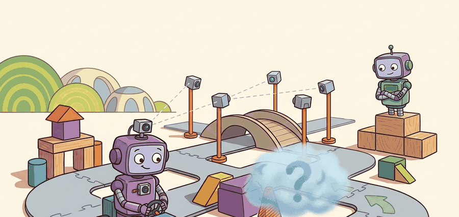

A world model lets the car ask "what happens if I do this?" without leaving the lane to find out.
On learned simulators for driving

This section assumes familiarity with model-based control from section 37.1 and with latent world models from section 38.3; the occupancy representation used here is introduced in section 28.4. The closed-loop planning pattern developed in this section is applied directly to safety evaluation in section 48.9, and the video-diffusion generation techniques are extended alongside language-conditioned scene synthesis in section 48.8.
A world model learns to predict how the scene will evolve, often as future video frames or future occupancy, conditioned on the ego action. Driving world models such as GAIA-1, UniSim, and DriveDreamer generate realistic future sensor streams, which serve two purposes: closed-loop planning (imagine and evaluate candidate actions) and data augmentation (synthesize rare or dangerous scenarios that are unsafe or expensive to collect on real roads). Occupancy flow prediction is a lighter-weight cousin that forecasts where space will be occupied and how it moves.
This section develops the world-model contract: given a history of observations and a proposed action sequence, predict future observations (frames, occupancy, or flow) with enough fidelity that planning decisions made in imagination transfer to the real road. The recurring question is closed-loop validity: a model can produce beautiful video yet still be useless for planning if its predicted dynamics drift from real physics over the horizon.
Theory
From prediction to imagination
A learned world model approximates the environment transition $p(o_{t+1} \mid o_{\le t}, a_t)$. Unrolling it produces an imagined rollout the planner can score, turning planning into search over action sequences inside a differentiable or sampleable simulator. This is the driving instance of the model-based control idea: plan in a learned model, act in the world.
Generative driving world models
- GAIA-1 casts driving generation as next-token prediction over discretized video, text, and action tokens, producing controllable future driving videos.
- UniSim aims for a general interactive simulator: condition on an action and render the resulting next observation, so an agent can be trained and tested entirely inside the learned simulator.
- DriveDreamer conditions video diffusion on structured driving signals (HD map, 3D boxes, actions) to generate diverse, controllable scenarios for training perception and planning.
Occupancy flow
Rather than render pixels, occupancy flow predicts a future occupancy grid plus a flow field describing how occupied cells move. It is cheaper, directly consumable by planning (the planner wants to know what space will be blocked), and avoids hallucinating photorealistic but dynamically wrong frames.
"UniSim: Learning Interactive Real-World Simulators" (Yang et al., ICLR 2024). UniSim learns a single action-conditioned generative simulator from heterogeneous real-world data (robot trajectories, human activity, navigation), so that issuing an action produces a plausible next visual observation. For driving, the promise is to train and evaluate policies inside a learned simulator that captures real-world appearance and dynamics, reducing reliance on hand-built simulators and risky on-road testing. The paper's central evidence is that policies and perception models trained purely in the learned simulator transfer to real settings, which is the property a driving world model must have to be more than a video generator.
The decisive test of a driving world model is not frame realism but whether a maneuver judged safe in imagination is safe on the road. A model that produces crisp frames yet lets predicted vehicles drift off-physics over a 5 s horizon will mislead the planner. Always evaluate the model by closed-loop policy transfer, not only by perceptual fidelity metrics.
For closed-loop planning the loop is: encode current observation, propose candidate action sequences, unroll the world model for each to get imagined futures, score each future with a reward or cost (collision, progress, comfort), and execute the first action of the best sequence (model predictive control in latent space). For data augmentation the loop is offline: sample diverse conditions (weather, agents, rare events), generate synthetic sensor data plus labels, and add it to the training set for downstream perception and planning.
Algorithm: Closed-Loop World-Model Planning (Imagined MPC)
Input: current observation $o_t$, action candidate set $\mathcal{A} = \{a^{(1)}, \ldots, a^{(K)}\}$, world model $\hat{p}_\theta$, planning horizon $H$, cost function $c(\cdot)$, safety threshold $\delta$
Output: selected action $a^*$ to execute at time $t$
- Encode the current observation into a compact state: $z_t = f_\theta(o_t)$.
- For each candidate action $a^{(k)} \in \mathcal{A}$, initialize the imagined state $\hat{z}_0^{(k)} \leftarrow z_t$.
- Unroll the world model forward for $H$ steps: $\hat{z}_{h+1}^{(k)} = \hat{p}_\theta(\hat{z}_h^{(k)}, a^{(k)})$ for $h = 0, \ldots, H-1$.
- Decode each imagined state to an interpretable representation (occupancy grid, gap, or reward signal): $\hat{o}_h^{(k)} = g_\theta(\hat{z}_h^{(k)})$.
- Compute the worst-case safety margin over the horizon: $m^{(k)} = \min_{h=1}^{H} \text{margin}(\hat{o}_h^{(k)})$.
- Reject any candidate with $m^{(k)} < \delta$ (hard safety floor).
- Score each remaining candidate with the planning objective: $s^{(k)} = \sum_{h=1}^{H} \gamma^h \, c(\hat{o}_h^{(k)}, a^{(k)})$ where $\gamma \in (0,1]$ is a discount factor.
- Select the best safe action: $a^* = \arg\max_{k: \, m^{(k)} \ge \delta} s^{(k)}$.
- Execute $a^*$ in the real environment, observe $o_{t+1}$, and advance $t \leftarrow t+1$.
- Periodically recalibrate $\theta$ by measuring multi-step Average Displacement Error (ADE) on held-out data; cap $H$ at the horizon where ADE exceeds the lane-keeping tolerance.
Worked Example
The example sketches the planning use of a world model: a toy action-conditioned predictor is unrolled for several candidate accelerations, and the planner selects the action whose imagined future keeps the largest safety margin. It mirrors the real closed-loop pattern without a learned network.
import numpy as np
# Toy learned world model: predicts future ego-lead gap given an ego action.
# In reality this is a neural net rolling out future frames or occupancy.
def world_model_rollout(gap0, ego_v0, lead_v, accel, horizon=3.0, dt=0.1):
"""Imagine the gap trajectory under a constant ego acceleration."""
gap, ego_v, gaps = gap0, ego_v0, []
for _ in range(int(horizon / dt)):
ego_v = max(0.0, ego_v + accel * dt)
gap += (lead_v - ego_v) * dt # lead minus ego closing rate
gaps.append(gap)
return np.array(gaps)
gap0, ego_v0, lead_v = 18.0, 14.0, 9.0 # closing on a slower lead
candidates = [-3.0, -2.0, -1.0, 0.0, 1.0] # candidate ego accelerations
best_a, best_score = None, -np.inf
for a in candidates:
future = world_model_rollout(gap0, ego_v0, lead_v, a)
min_gap = future.min() # imagined worst-case safety margin
# Reward keeping a margin while not braking harder than needed.
score = min_gap - 0.5 * abs(a)
print(f"accel={a:+.1f} imagined_min_gap={min_gap:5.1f} m score={score:5.2f}")
if min_gap > 3.0 and score > best_score: # require a hard safety floor
best_a, best_score = a, score
print("chosen action (m/s^2):", best_a)
Expected output: aggressive positive accelerations let the imagined gap fall below the 3 m floor and are rejected; a mild deceleration wins because it preserves the safety margin at the least control cost. Swapping in a real GAIA-1- or UniSim-style model replaces world_model_rollout with a learned rollout while keeping this select-by-imagined-margin structure.
For world-model research, nuScenes and the Waymo Open Dataset supply real driving video and occupancy labels; the Occupancy Flow Challenge tooling evaluates occupancy and flow predictions. Open implementations of video-diffusion driving generators (DriveDreamer-style) and latent world-model planners (Dreamer-style) provide starting points. Validate any generator by closed-loop policy transfer in CARLA, not by frame metrics alone.
The choice of world-model output format depends on the downstream consumer and available compute. Full video generation (GAIA-1, DriveDreamer) is best for data augmentation where perception models need realistic pixel inputs; it is too slow and hallucination-prone for real-time closed-loop planning. Occupancy plus flow is the right target when the consumer is a planner or trajectory predictor: it is computationally cheap, directly encodes what space will be blocked and how fast, and avoids the pixel-realism trap. Latent-state rollouts (Dreamer-style) suit online MPC inside a compact learned latent space, but require careful calibration because latent distances do not map cleanly to physical safety margins. A common mistake is training a video model and then trying to plan inside it; the correct sequence is to pick the output format from the planning interface first, then train accordingly.
When using a Dreamer-style latent world model for driving MPC, compute the multi-step Average Displacement Error (ADE) on a held-out nuScenes split at 1 s, 2 s, and 3 s rollout horizons before you set the planning horizon. Cap the planning horizon at the first step where ADE exceeds your lane-keeping tolerance (typically 0.3 m for highway, 0.5 m for urban), because latent distances do not map linearly to metric space and the drift compounds silently. Skipping this calibration is the most common reason a latent-space planner performs well in imagination but triggers unsafe maneuvers on the road.
Practical Recipe
- Pick the output target deliberately: full video (rich but expensive), occupancy plus flow (planning-ready), or latent state (compact).
- Condition generation on action and structure (map, boxes) so rollouts are controllable, not free-running dreams.
- Evaluate fidelity over the planning horizon, not just one step; dynamics drift compounds.
- Validate by closed-loop transfer: train or plan in the model, test on real or high-fidelity sim.
- For augmentation, oversample rare events and verify downstream metrics improve on a real held-out set.
Horizon drift: a world model accurate at 1 step accumulates error over a multi-second rollout, so the planner optimizes against a fantasy. The symptom is plans that look great in imagination and fail on the road. Always report multi-step rollout error and cap the planning horizon at the length where the model is still calibrated.
A team cannot collect enough wet-night cut-in data. They condition a DriveDreamer-style generator on map, agent layout, and a cut-in action to synthesize labeled wet-night cut-ins, add them to training, and measure the predictor's miss rate on a real wet-night held-out slice. The augmentation counts only if that real-slice metric improves.
A world model is a daydream with a deadline: it must imagine the next few seconds well enough to act on, and no further.
Unified driving foundation models that perceive, predict, and plan inside one learned world model are the frontier UniSim points toward. The open problems are long-horizon dynamical consistency, controllability of rare events, and certifiable safety for policies trained inside a learned simulator.
Can you state the two distinct uses of a driving world model (closed-loop planning and data augmentation) and the single property (closed-loop transfer) that validates both? If not, revisit the spotlight and key-insight boxes.
| Tool or Library | Role in the Topic | Builder Advice |
|---|---|---|
| nuScenes, Waymo Open Dataset | Real video and occupancy for training and evaluation | Use real held-out slices to validate augmentation. |
| Occupancy Flow Challenge tooling | Occupancy and flow metrics | Prefer occupancy/flow when the consumer is planning. |
| CARLA closed-loop harness | Policy-transfer validation | Judge world models by transfer, not frame fidelity. |
Section 48.3 covers explicit trajectory prediction this section generalizes, Section 48.4 and 48.8 consume imagined futures for planning, and 48.9 evaluates whether world-model-driven policies are actually safe closed-loop.
Add Gaussian drift to the toy world_model_rollout that grows with the rollout step, then re-run the planner. Find the horizon at which the chosen action flips to an unsafe one, and report it as the model's usable planning horizon.
Section References
Yang et al., "UniSim: Learning Interactive Real-World Simulators," ICLR 2024. Hu et al., "GAIA-1: A Generative World Model for Autonomous Driving," 2023. Wang et al., "DriveDreamer: Towards Real-World-Driven World Models for Autonomous Driving," ECCV 2024.
These define learned interactive simulators and generative driving world models used for planning and augmentation.
World models let a vehicle plan and train inside imagined futures and synthesize rare scenarios for free. Their worth is decided by closed-loop transfer and long-horizon consistency, not by how realistic a single generated frame looks.
Design a same-panel experiment comparing a constant-velocity predictor against a learned world-model rollout for planning on a hard-braking-lead scenario set. Report imagined-versus-realized gap error at 1 s, 2 s, and 3 s, and the closed-loop collision rate, and argue which is safe to deploy.